Reviving Vintage Garments
Expert techniques for safely restoring and reviving heirloom vintage clothing without damaging fragile fibers.
Read ArticleInsights on garment care, style, and sustainable living — written by our master cleaners.
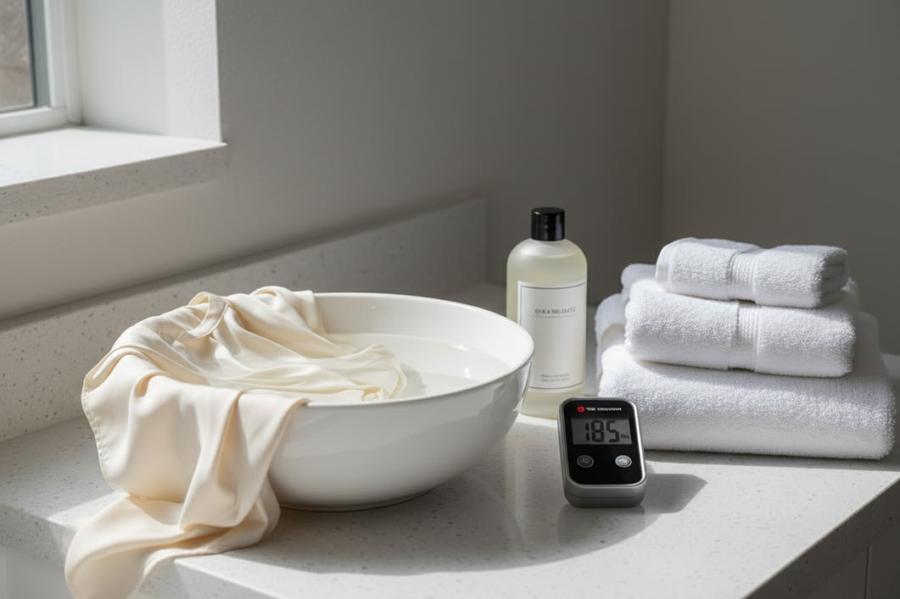
The FeatureSilk is the most delicate of luxury fibers — and the most rewarding to preserve. In this comprehensive guide, our master cleaners walk you through washing temperatures, drying techniques, storage rituals, and the professional treatments that keep heirloom silks lustrous for decades.
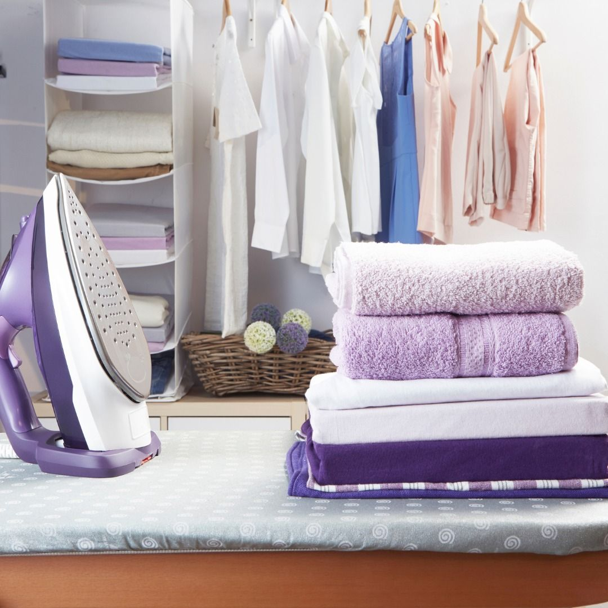
01 Fabric CareExpert techniques for safely restoring and reviving heirloom vintage clothing without damaging fragile fibers.
Read Article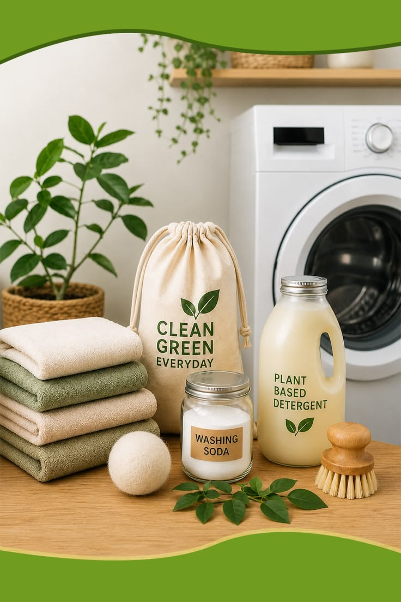
02 SustainabilityHow modern dry cleaning technology is shifting away from harsh chemicals toward gentle, plant-based alternatives.
Read Article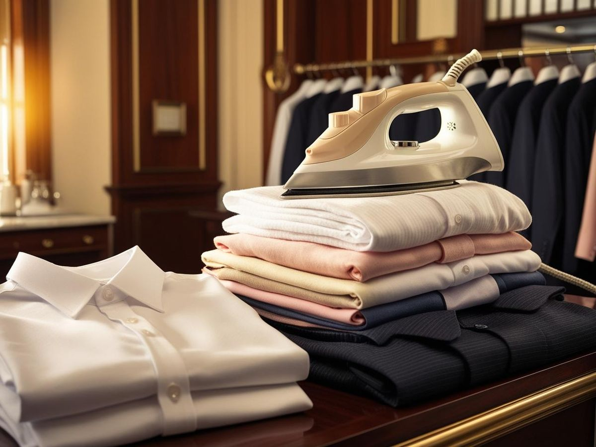
03 StyleWhy artisan hand-ironing makes all the difference when preparing for high-stakes corporate meetings and events.
Read Article 04
Laundry Basics
04
Laundry Basics
Perfect folds preserve fabric structure and keep your drawers organized. Learn the methods our artisans swear by.
Read Article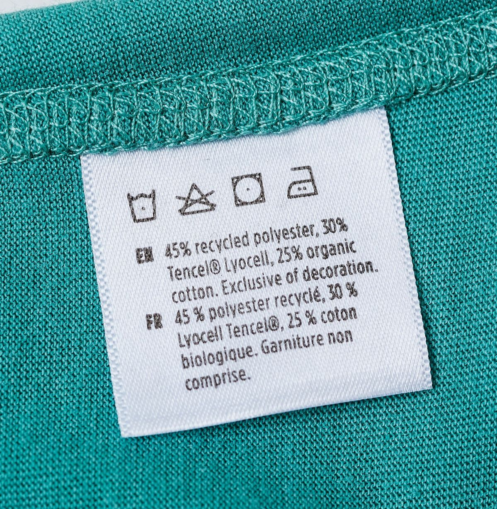
05 Fabric CareThose tiny symbols hold the key to garment longevity. Decode them with our comprehensive guide.
Read Article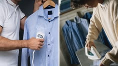
06 StyleA practical breakdown of when to steam, when to press, and how each technique protects your fabrics.
Read ArticleModern machines and methods are cutting water usage dramatically without compromising on cleanliness.
Read Article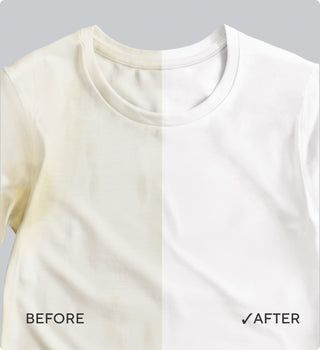
08 Laundry BasicsThe science behind dulling whites and the professional techniques that keep them brilliant for years.
Read Article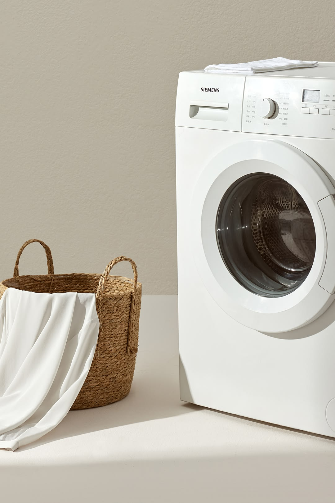
09 Laundry BasicsFrom delicates to heavy linens, the ultimate guide to sorting your entire home's laundry efficiently.
Read ArticleHow garment care evolved from hand-scrubbing riverside to the precision dry cleaning we know today.
Read Article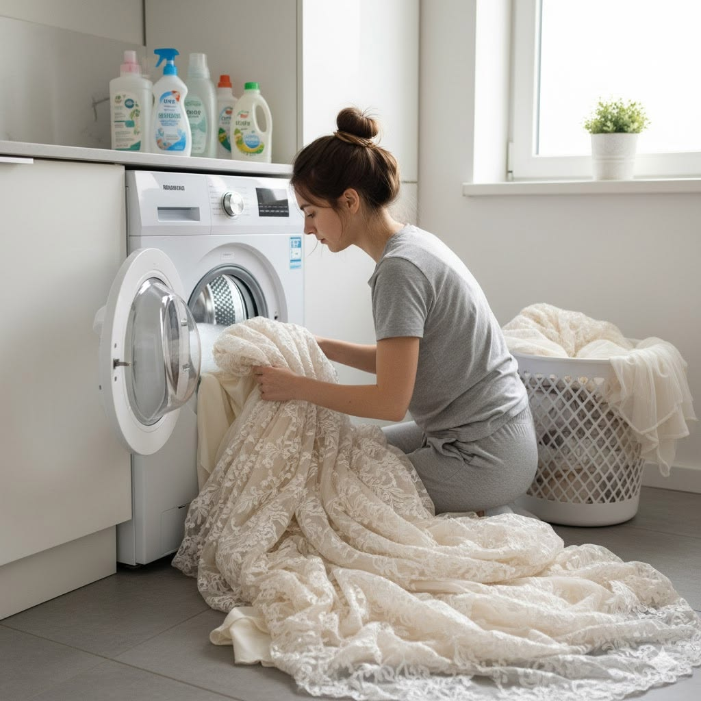
11 Fabric CareHeirloom pieces deserve heirloom care. Gentle handling techniques to protect intricate detailing.
Read Article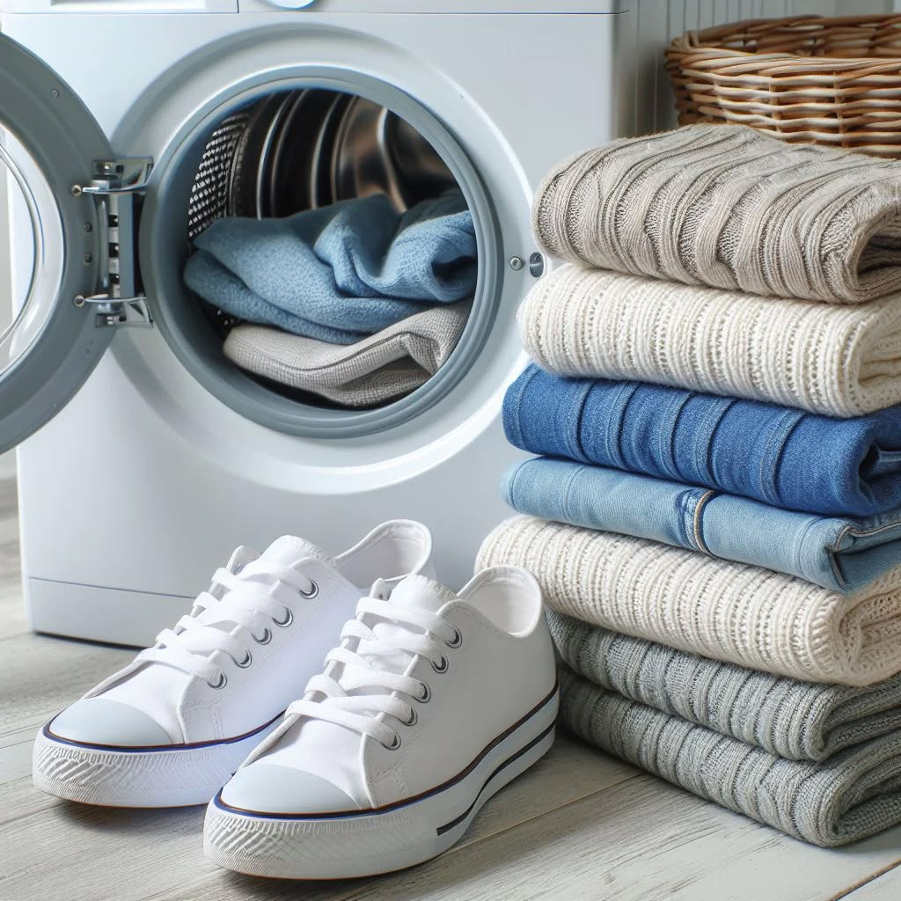
12 StyleFewer, better pieces, properly maintained. How premium care multiplies the life of every investment.
Read Article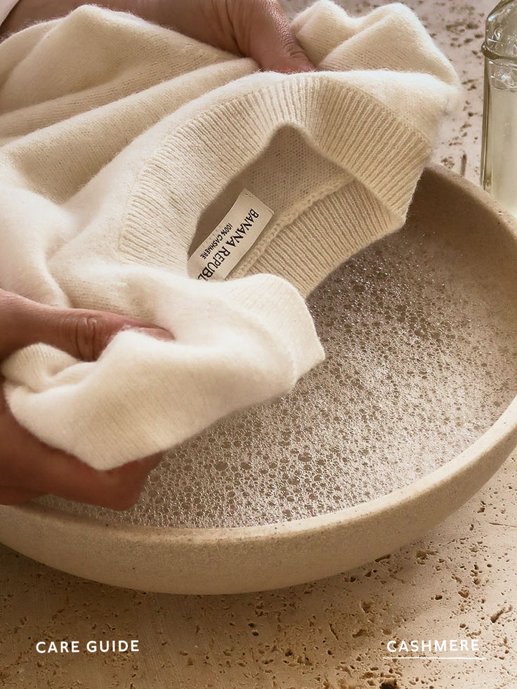
13 Fabric CareFrom washing to storage, the complete routine for keeping your cashmere cloud-soft season after season.
Read Article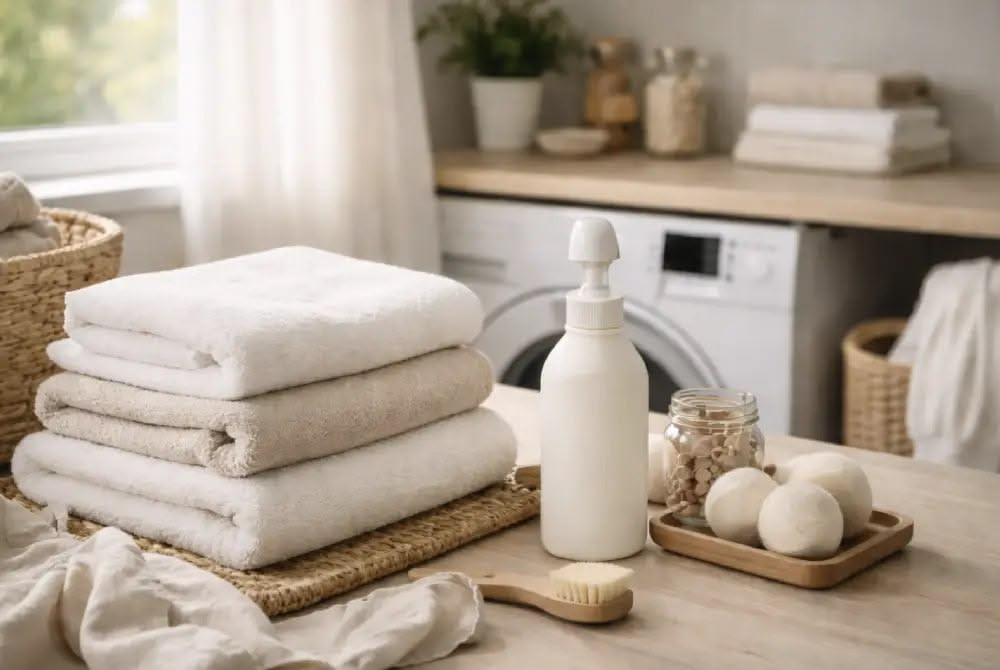
14 SustainabilitySmall changes — from detergents to hangers — that dramatically reduce your laundry's footprint.
Read Article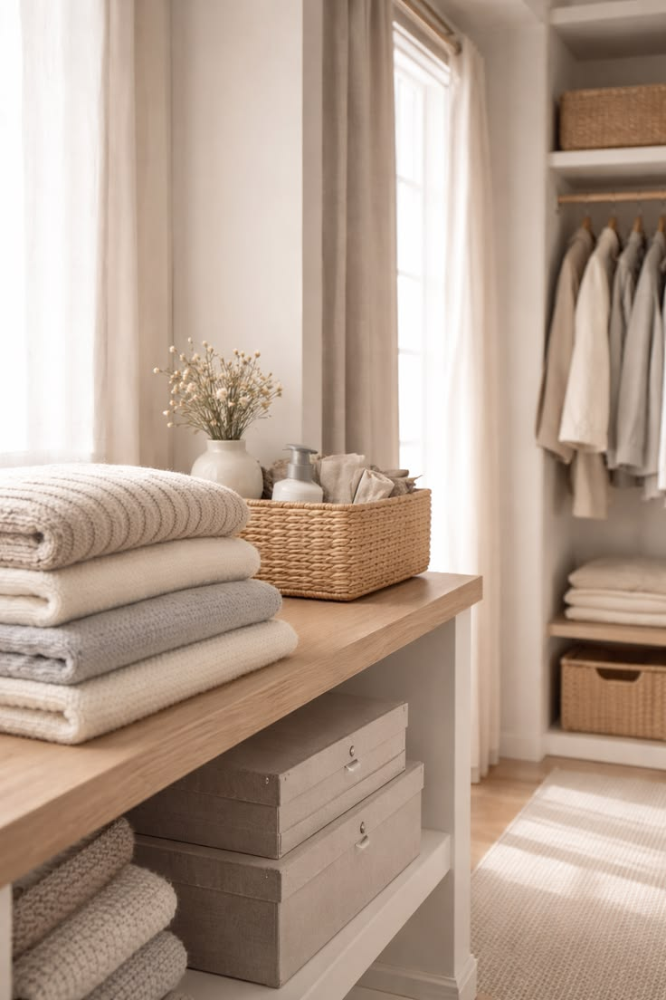
15 StyleThe right hangers, folds, and climate control can double the lifespan of your finest pieces.
Read Article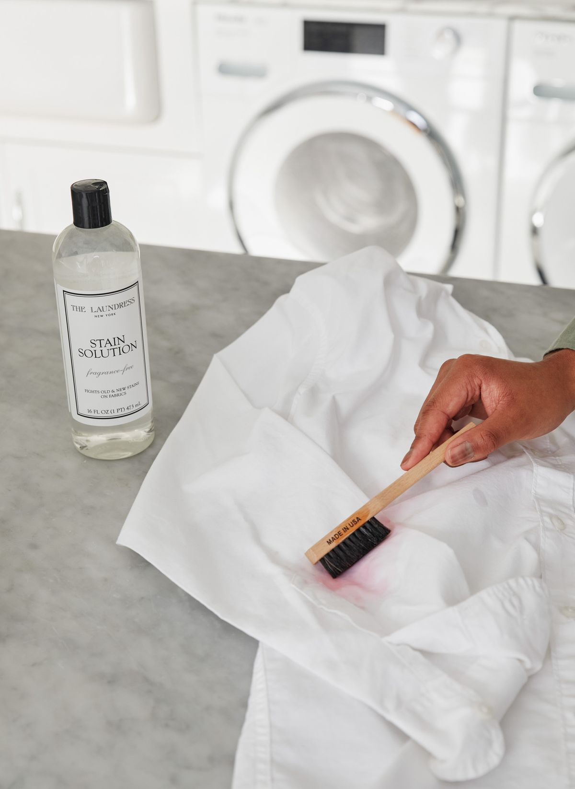
16 Laundry BasicsA field guide to the most common stains and the professional pre-treatments that save the day.
Read Article